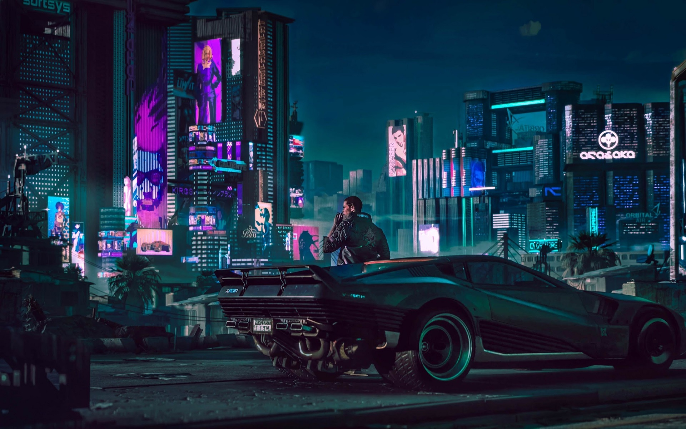
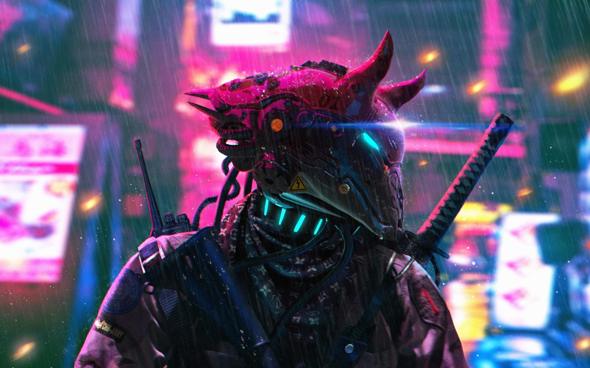

Night City
ciudad nocturna, por primera vez se va hablar de la ciudad nocturna una ciudad creada por la gracia de la fe y el poder de la mente llena de preciosas tecnologias y de magia, la gente que llego a esa ciudad perdida se dicen que llegaron alli por sentir miedos y gracias al poder de la fe que los acompañaban puedieron ver la cura a sus miedos y la preciosa magia que circulaba desde su interior.
Banda Sonora
Recibimos una introducción a los músicos detrás de la música de Cyberpunk 2077. Grupos y artistas como Run the Jewels, Grimes, Refused y A$AP Rocky expresan su entusiasmo por ser parte de la banda sonora del juego.